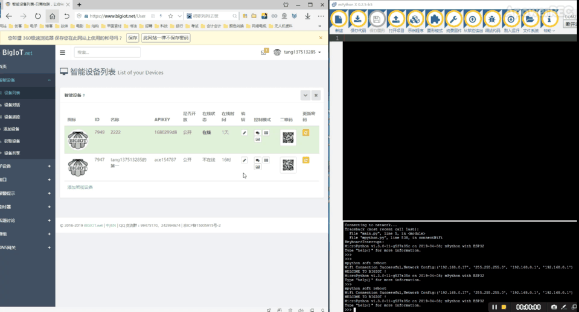
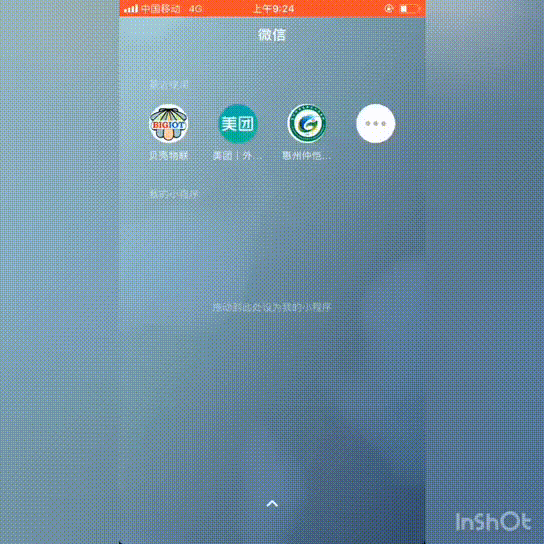

贝壳物联
贝壳物联是一个让你与智能设备沟通更方便的物联网云平台，你可以通过互联网以对话、遥控器等形式与你的智能设备聊天、发送指令，查看实时数据， 跟实际需求设置报警条件，通过APP、邮件、短信、微博、微信等方式通知用户。

贝壳物联架构
贝壳物联平台通讯协议：https://www.bigiot.net/help/1.html
掌控板连接贝壳物联
准备工作
在使用前,需要先到贝壳物联 https://www.bigiot.net 注册账号,并增加智能设备。
程序中,需要用到bigiot的mPython库,你可以到 https://github.com/labplus-cn/awesome-mpython/tree/master/library 获取。 将 bigiot.py 上传到文件系统中。
设备间通讯
1from mpython import *
2import bigiot
3
4my_wifi = wifi()
5my_wifi.connectWiFi("youruser", "yourpassword")
6
7ID = "" # 设备ID
8API_KEY = "" # 设备APIKEY
9
10
11
12def say_cb(msg): # 回调函数
13 print(msg)
14 oled.DispChar("%s,%s" %(msg[0],msg[1]),0,10) # 显示到oled
15 oled.show()
16 oled.fill(0)
17
18
19device = bigiot.Device(ID, API_KEY) # 构建bigiot 设备
20
21device.say_callback(say_cb) # 设置say通讯的回调函数
22
23device.check_in() # 登陆
连接贝壳物联平台前,需要确保掌控板已连接到互联网中。在实例设备时 Device(id,api_key) ,用到贝壳物联的智能设备信息, ID 和 API KEY 。
设置say通讯的回调函数 say_callback(f) 。f(msg,id,name)回调函数, msg 参数为接收消息, id 参数为发送设备ID, name 参数为设备名称。
check_in() 为设备上线函数,可在贝壳物联平台上看到设备的连接状态。
上示例,设置回调函数并将say通讯接收到的数据打印出来。
客户端向掌控板发送消息
贝壳物联支持多种客户端与设备间通讯,如浏览器、微信小程序公众号、APP(Android)。

浏览器端
{kind=link}

微信小程序
掌控板向设备端或客户端发送
设备
你可在贝壳物联平台上同时添加多个智能设备。只要该智能设备已上线并且知道该设备的 ID ,你就可以向智能设备发送消息。
向ID: 7947设备发送消息:
>>> device.say(device_id = 7947, msg = 'hello I am mPython')
客户端
向web端或微信等客户端发送消息,你可以在平台”个人信息”查看到你的用户ID:
>>> device.say(user_id = 5600, msg = 'hello I am mPython')
群组
你也可以在平台设置多个智能设备组成群组,向群组发送消息,这样,该组成员均能接收到消息,类似IP组播功能:
>>> device.say(group_id = 145, msg = 'hello I am mPython')
say(user_id, group_id, device_id, msg) 该函数用于设备或客户端的对话。user_id 、group_id 、device_id 参数分别为用户ID、群组ID、设备ID。根据对话对象选择使用参数。
msg 为对话消息,类型为字符串。
向接口发送数据
往接口:9564发送掌控板的光线数据:
while True:
val=light.read()
device.update(9564,str(val))
sleep(1)
贝壳物联提供接口,用于收集传感器实时数据,并会绘制图表。update(id, data)为上传数据函数。 id 为接口ID, data 参数为上传的传感器数据,注意,该类型为字符串。如是int,需要转换成str。
还有,数据发送不易过快,至少有1秒间隔以上。
语音助手
贝壳物联还能连接天猫精灵、百度语音助手,贝壳物联的设备作为客户端。接收服务端发送来的语音指令。实现语音控制智能家居的应用。
天猫精灵绑定控制贝壳物联设备方法
天猫精灵绑定方法参考教程: https://www.bigiot.net/talk/359.html